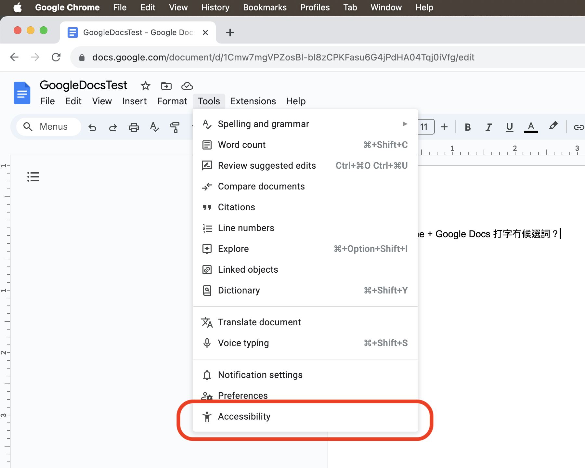
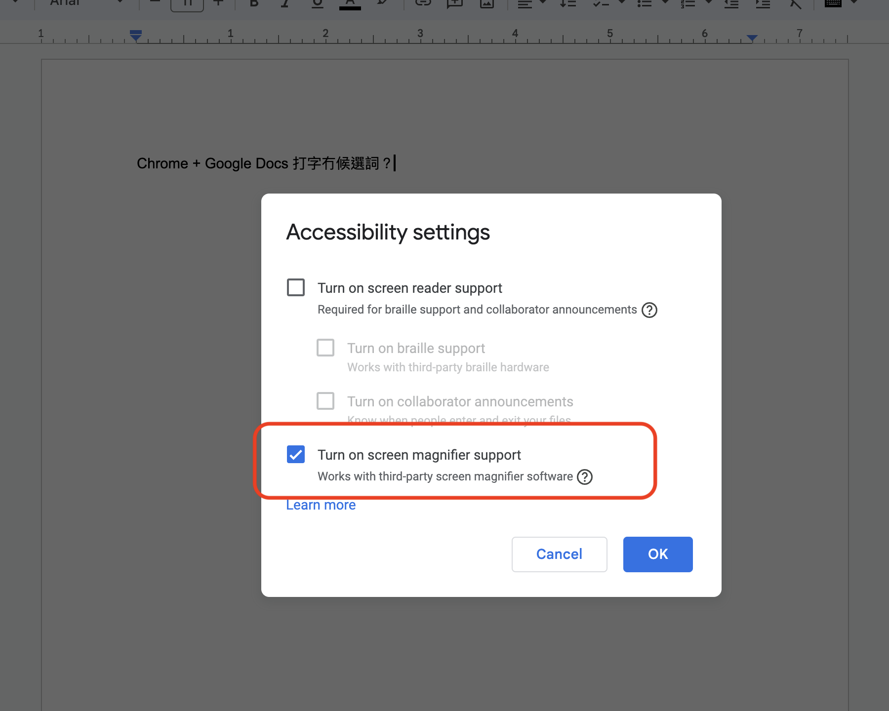

由於系統限制，所有第三方輸入法都冇辦法使用外置鍵盤。
無論係 Magic Keyboard、Smart Keyboard，定係 Magic Keyboard Folio、Smart Keyboard Folio，抑或其他外置鍵盤。
由於系統限制，鍵盤需要「允許全權取用」權限，先可以提供振動／觸感回應。
去系統設定App 開啓「允許全權取用」權限畀邇個鍵盤之後。
仲需要撳邇個鍵盤上部個齒輪掣，入到設定䈎面，去選擇啓用振動／觸感回應。
撳組合掣 Control + Shift + ` (esc下邊箇粒掣)，會出現一個選項䈎面，可以揀簡化字等各種選項。
可以嘗試去 系統設定App → 粵拼 → 鍵盤。
關閉一下「允許全權取用」，再開啓一下。
系統就會重啓個鍵盤，應該就會好返少少。
如果你係啱啱安裝／更新輸入法，請確保登出再登入一下電腦，以使輸入法正常生效。
亦有可能係輸入法自己嘅問題，請嘗試：
切換到其他輸入法，再切換返來。
換一個地方／視窗打字，再換返來。
如果再毋得，可能要將邇個輸入法結束運行。
方法一：去 Activity Monior(活動監視器) 搵到「粵拼/Jyutping」，將佢結束運行。
方法二：去 Terminal(終端) 運行以下命令將佢結束運行：
osascript -e 'tell application id "org.jyutping.inputmethod.Jyutping" to quit'
主要係因爲 Google Docs 係用 Canvas 來繪製䈎面。(source)
包括系統自帶輸入法在內，大部分輸入法都會或多或少無法完美兼容。
惟有期望 Google 整返好佢。
不過好彩，當前有辦法可嘗試緩解邇個問題：
第一步：撳 Google Docs 個 Tools 選單，搵到 Accessibility，撳入去。
第二步：勾選 Turn on screen magnifier support，然後撳 OK 掣。
 
原因一：輸入法需要安裝於 /Library/Input\ Methods/ 目錄，而毋係通常嘅 /Applications/ 目錄。修改 /Library/Input\ Methods/ 目錄需要用戶授權。
原因二：安裝輸入法需要運行輸入法程式本身來做各種操作，仲需要運行一系列腳本(script)。
以上惟有 .pkg 可以做到，而 .dmg 毋得。
請參攷: 如何卸載 macOS 粵拼輸入法
係因爲你嘅設備缺少可以顯示邇啲字符（字元）嘅字體。
如果係 iPhone 或 iPad，將系統更新至最新可能會有少少改善。
如果係 macOS，可以通過安裝大字符（字元）集字體來解決。
推薦安裝以下全部四款字體：
如果你毋知點樣安裝字體，可以睇下邇篇 Apple 支援。